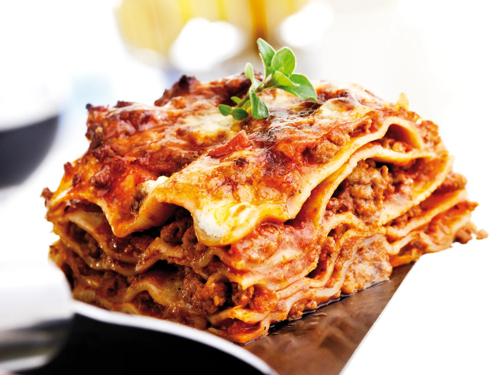

Lasagna

Lasagna alla Bolognese
Le lasagne alla Bolognese sono un'istituzione, il piatto tipico della domenica. Questa pietanza ricca e saporita è originaria dell'Emilia e, nello specifico, della città di Bologna.
Ingredienti
- Semola di grano duro
- Spinaci
- Tuorli
- Farina
- Uova
Preparazione
- Con un coltello o una mezzaluna sminuzzate la pancetta per bene
- A parte preparate un trito fine con carote, cipolle, sedano e tenetelo da parte
- Ecc...